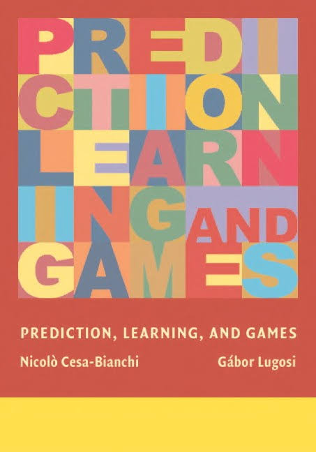

简介
《Prediction, Learning, and Games》是由 Nicolo Cesa-Bianchi 和 Gabor Lugosi 合著的一本经典书籍。它结合了机器学习、在线学习、博弈论以及统计等多个领域的知识。这本书深入探讨了预测与决策过程中不确定性和随机性的数学模型，并为理解学习算法的性能提供了非常有价值的理论框架。对于研究机器学习、数据科学或者博弈论的人来说，这本书非常重要。
由于时间有限，目前会分章节逐步提供内容更新。如果你对某些内容有疑问，或者发现问题，欢迎通过邮箱联系我。 （最后更新于2024年9月18日）
